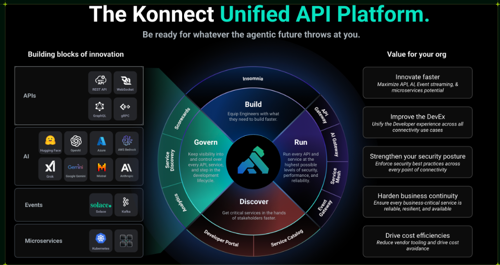

Kong API Gateway & Konnect Workshop¶
Bienvenido al material oficial del Workshop de Kong API Gateway & Konnect. Este curso presencial de cuatro días está orientado a proporcionar formación práctica en API Gateway, AI Gateway, GitOps, Seguridad y Observabilidad: el Día 1 combina teoría y demostraciones, el Día 2 está dedicado a laboratorios hands-on, el Día 3 presenta Kong AI Gateway con teoría y demostraciones, y el Día 4 está dedicado a laboratorios hands-on de AI Gateway.

Descripción y Objetivos¶
Todo el workshop utiliza un enfoque GitOps con gestión declarativa vía decK (Días 1–2) y kongctl (AI Gateway, Días 3–4), automatización con Terraform, y backends simulados con Docker.
Backend de Pruebas: httpbin¶
Como hilo conductor de nuestras prácticas y demostraciones, utilizaremos httpbin como nuestro backend de pruebas simulado. En nuestro entorno local, este servicio ya se encuentra pre-desplegado mediante Docker (en el contenedor httpbin-backend). httpbin es una herramienta genérica muy utilizada para probar peticiones HTTP; nos permite verificar de manera sencilla qué headers, métodos y cuerpos de mensajes están llegando efectivamente al backend luego de pasar por el API Gateway.
Nuestro trabajo durante el workshop será exponer, asegurar y gestionar el tráfico hacia estas APIs de prueba utilizando Kong Konnect, permitiéndonos enfocarnos en el ruteo, las transformaciones y las políticas de seguridad sin depender de una lógica de negocio compleja en el backend.
Día 1: Bloque Teórico — Fundamentos, Operaciones y Seguridad¶
Teoría Integral de Kong Konnect
- Arquitectura Conceptual: Entender la separación Control Plane (Konnect) y Data Plane (Kong Gateway basado en NGINX/OpenResty), y la comunicación vía túnel gRPC mTLS.
- Developer Track: Conceptos de Gateway Services, Routes, Plugins, Developer Portal y publicación de Catalog APIs.
- Operations Track: Gobierno declarativo con decK/Terraform, monitoreo de tráfico y observabilidad avanzada con OpenTelemetry (OpenObserve + Arize Phoenix).
- Security Track: Estrategias Zero Trust, OIDC, RBAC y control de acceso mediante OPA.
- Demos complementarias: Integración ITSM, Gestión de Secretos (Vaults) y Seguridad OWASP / WAF.
Día 2: Bloque Práctico — Hands-On Labs¶
Laboratorios Guiados y Práctica
- Setup y Ruteo: Inicialización del entorno local y despliegue declarativo de rutas.
- Plugins y Portales: Transformaciones de payload, ruteo inteligente y publicación de catálogos OAS.
- Operaciones y Seguridad: Despliegue de observabilidad local (OTel Collector + OpenObserve + Phoenix), aplicación de Key Auth, restricción de IPs y OIDC.
- Event Gateway: Integración asíncrona enviando mensajes a tópicos de Kafka (Event-Driven Architecture).
Día 3: AI Gateway — Teoría y Demostraciones¶
Kong AI Gateway 2.2 sobre Konnect, gobernado con kongctl
- Arquitectura 2.x: Control Plane propio en Konnect (modelos, proveedores, policies, MCP, agentes), Data Plane
kong/kong-ai-gateway:2.2.0y APIOps con kongctl. - Acceso y gobierno: un endpoint OpenAI-compatible para modelos locales y comerciales, failover, passthrough, ACL por modelo, cuotas de tokens y presupuesto en USD.
- Seguridad y optimización: guardrails (regex y semánticos), PII, ruteo semántico, caché semántica, compresión y RAG gestionado.
- Agentes: APIs REST como tools MCP con ACL por agente, A2A, observabilidad de IA (OpenObserve + Phoenix), FinOps y Metering & Billing; novedades del AI Summit 2026.
Día 4: AI Gateway — Hands-On Labs¶
Cada participante construye su propio AI Gateway, sin claves de pago
- Setup: AI Gateway en Konnect + Data Plane 2.2 en Docker + Ollama con modelos open-weight pequeños (CPU).
- Labs: multi-LLM y failover, cuotas y presupuesto, guardrails, semántica y caché, RAG, MCP, A2A, observabilidad.
- Desafío final: asistente de crédito gobernado (banca).
Agenda Completa del Taller¶
El workshop está planificado en cuatro jornadas estructuradas: los Días 1 y 2 de 08:00 a 17:00 y los Días 3 y 4 (AI Gateway) de 08:00 a 16:30:
Día 1: Teórico y Demostraciones¶
| Horario | Bloque | Tema / Módulo |
|---|---|---|
| 08:00 - 08:30 | Mañana (Todos) | Bienvenida, Arquitectura y Setup Conceptual |
| 08:30 - 09:15 | Mañana (Dev) | Módulo 00: Arquitectura Conceptual y Setup Local |
| 09:15 - 10:15 | Mañana (Dev) | Módulo 01: Kong Konnect Gateway & Control Planes |
| 10:15 - 10:30 | - | Coffee Break |
| 10:30 - 12:00 | Mañana (Dev) | Módulo 02: Ecosistema de Kong Plugins |
| 12:00 - 13:00 | Mañana (Dev) | Módulo 03: Developer Portal, Customización y Onboarding |
| 13:00 - 14:15 | - | Almuerzo (Devs se retiran) |
| 14:15 - 15:15 | Tarde (Ops) | Módulo 04: Gateway Operations & GitOps (decK / Terraform) |
| 15:15 - 15:45 | Tarde (Ops) | Módulo 05: Monitoring y Logging (Konnect Analytics) |
| 15:45 - 16:00 | - | Coffee Break |
| 16:00 - 16:45 | Tarde (Ops) | Módulo 06: Observabilidad Avanzada (OpenTelemetry / OpenObserve / Phoenix) |
| 16:45 - 17:30 | Tarde (Sec) | Módulo 07: Securing API Traffic (Key Auth, ACL, OIDC, IP Restriction) |
| 17:30 - 17:45 | Tarde (Todos) | Health Check de Entornos (Preparación Día 2) |
Día 2: Práctico — Hands-On Labs y Cierre¶
| Horario | Bloque | Laboratorio / Actividad Práctica |
|---|---|---|
| 08:00 - 08:15 | Mañana (Todos) | Bienvenida al Día Práctico, credenciales y repaso GitOps |
| 08:15 - 09:00 | Mañana (Dev) | Lab: Setup del Entorno Local |
| 09:00 - 09:50 | Mañana (Dev) | Lab: Routing Declarativo + Upstreams & Health Checks |
| 09:50 - 10:05 | - | Coffee Break |
| 10:05 - 11:20 | Mañana (Dev) | Lab: Catalog APIs & OAS + Transformaciones |
| 11:20 - 12:00 | Mañana (Dev) | Labs Avanzados: Ruteo Inteligente y Validación JSON |
| 12:00 - 13:00 | - | Almuerzo (Devs se retiran / Ingresa Ops) |
| 13:00 - 13:15 | Tarde (Todos) | Bienvenida y sincronización de entornos (Ingresantes de la tarde) |
| 13:15 - 14:15 | Tarde (Ops) | Lab: Observabilidad Distribuida con OTel, OpenObserve y Phoenix |
| 14:15 - 15:25 | Tarde (Sec) | Lab: Zero Trust Key Auth + OIDC & ACL |
| 15:25 - 15:40 | - | Coffee Break |
| 15:40 - 16:25 | Tarde (Sec) | Lab: Restricción de IPs + OPA Authorization |
| 16:25 - 17:00 | Tarde (Todos) | Cierre del taller, resolución de dudas y próximos pasos |
Día 3: AI Gateway — Teoría y Demostraciones¶
| Horario | Bloque | Tema / Módulo |
|---|---|---|
| 08:00 - 08:15 | Mañana (Todos) | Bienvenida y objetivos del bloque de IA |
| 08:15 - 09:00 | Mañana (Dev) | Módulo IA 00: Arquitectura AI Gateway 2.x en Konnect y kongctl |
| 09:00 - 09:45 | Mañana (Dev) | Módulo IA 01: Un endpoint, muchos LLMs |
| 09:45 - 10:00 | - | Coffee Break |
| 10:00 - 10:45 | Mañana (Sec) | Módulo IA 02: Gobierno, cuotas de tokens y presupuesto |
| 10:45 - 11:30 | Mañana (Sec) | Módulo IA 03: Guardrails y PII |
| 11:30 - 12:10 | Mañana (Dev) | Módulo IA 04: Ruteo semántico, caché y compresión |
| 12:10 - 13:10 | - | Almuerzo |
| 13:10 - 13:35 | Tarde (Dev) | Módulo IA 05: RAG gestionado |
| 13:35 - 14:25 | Tarde (Dev) | Módulo IA 06: MCP — APIs como tools, bundling y ACL por agente |
| 14:25 - 14:50 | Tarde (Dev) | Módulo IA 07: Agentes y A2A |
| 14:50 - 15:05 | - | Coffee Break |
| 15:05 - 15:50 | Tarde (Ops) | Módulo IA 08: Observabilidad y FinOps de IA, Metering & Billing |
| 15:50 - 16:10 | Tarde (Todos) | Módulo IA 09: Novedades AI Summit 2026 y roadmap |
| 16:10 - 16:30 | Tarde (Todos) | Health Check de entornos para el Día 4 (kongctl ≥ 1.20.1, Docker, descarga de modelos) |
Día 4: AI Gateway — Hands-On Labs¶
| Horario | Bloque | Laboratorio |
|---|---|---|
| 08:00 - 08:45 | Mañana (Todos) | Lab IA 00: Setup del AI Gateway (Konnect + DP 2.2 + Ollama) |
| 08:45 - 09:20 | Mañana (Dev) | Lab IA 01: Multi-LLM, failover y passthrough |
| 09:20 - 10:00 | Mañana (Sec) | Lab IA 02: Gobierno: ACL, cuotas y presupuesto |
| 10:00 - 10:15 | - | Coffee Break |
| 10:15 - 10:50 | Mañana (Sec) | Lab IA 03: Guardrails |
| 10:50 - 11:25 | Mañana (Dev) | Lab IA 04: Ruteo semántico y caché |
| 11:25 - 11:55 | Mañana (Dev) | Lab IA 05: RAG |
| 11:55 - 12:55 | - | Almuerzo |
| 12:55 - 13:40 | Tarde (Dev) | Lab IA 06: MCP |
| 13:40 - 14:05 | Tarde (Dev) | Lab IA 07: A2A |
| 14:05 - 14:50 | Tarde (Ops) | Lab IA 08: Observabilidad de IA (OpenObserve + Phoenix) |
| 14:50 - 15:05 | - | Coffee Break |
| 15:05 - 15:50 | Tarde (Todos) | Desafío IA (opcional): Asistente de crédito gobernado |
| 15:50 - 16:15 | Tarde (Todos) | Cierre del curso, limpieza de entornos (aplicar.sh 00, teardown.sh --all) y próximos pasos |
Contenido opcional
Las demos complementarias del Día 1 (ITSM, Secretos, OWASP / WAF) y el Lab 12 (Event Gateway con Kafka) no figuran en la agenda base: se programan según el tiempo disponible y el perfil de la audiencia.